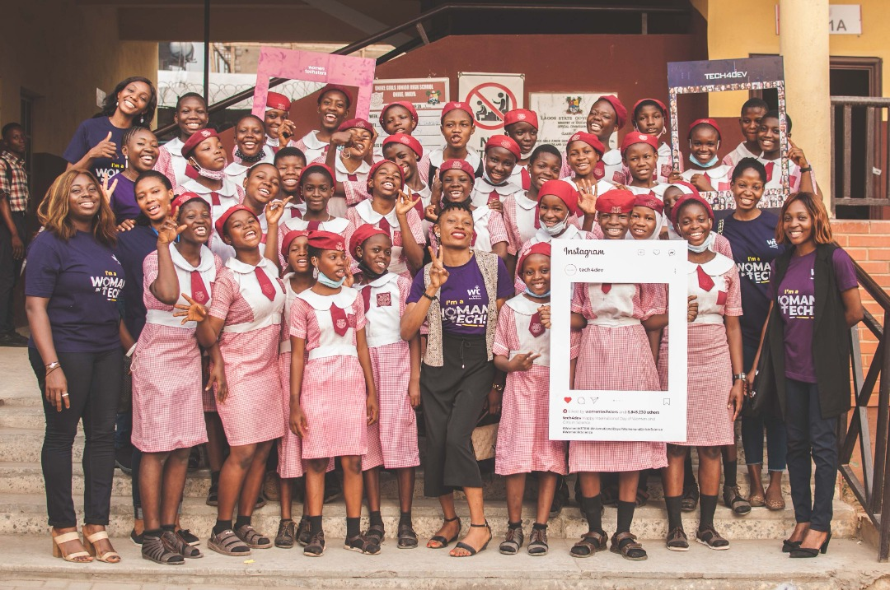
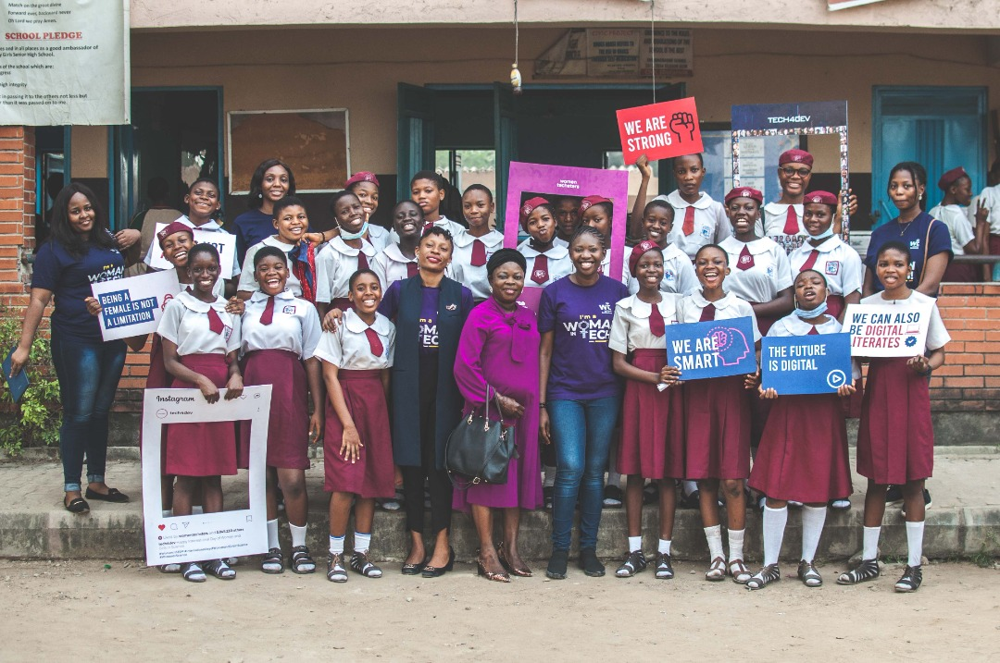
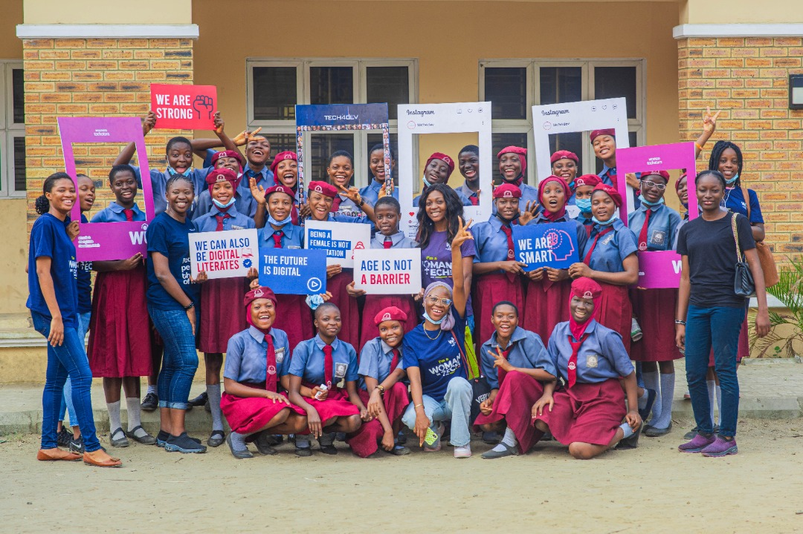
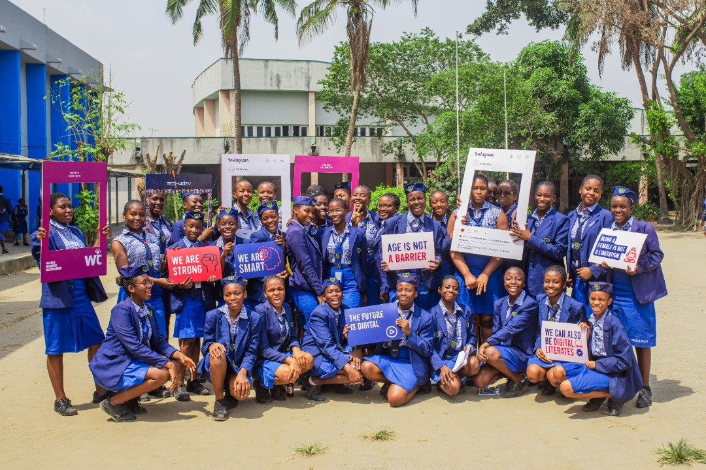

Back
Back
Women Techsters Tech Drive
| Febuary 18, 2021


According to United Nations, despite a shortage of skills in most technological fields driving the Fourth Industrial Revolution, women still account for only 28% of engineering graduates and 40% of computer science and informatics graduates.
The world is gradually progressing into a digital village. However, even in this progression, there is an apparent gender gap. One of the primary reasons for this gender gap is a widely known misconception that the Tech space is for men.
This year's International Day of Women and Girls in Science, a day set aside by the UN to celebrate women in science and advocate for full and equal access to and participation in science for women and girls, the Women Techsters, an initiative of Tech4Dev organized the Techgirls drive program.
The theme of this year's International Day of Women and Girls in Science was Equity, Diversity, and Inclusion: Water Unites Us under SDG 6 clean water and sanitation for all, which made the Tech Drive even more critical because, if we are to create sustainable change in the world mainly through tech, then gender equality in the tech space is of utmost importance because, the more people are involved, the more achievable the goals become.
The primary objective of the drive was to sensitize young girls on the importance of making informed career choices in STEM and demystify the myths around women and girls in STEM. The expected outcome of this project was; to increase the students' knowledge in STEM to make informed career choices and increase the number of girls starting a career in STEM in the nearest future. Although we initially selected 16 schools for the outreach, the Tech drive took place in five secondary schools, 4 State schools, and 1 Federal-owned school in Lagos from 7th-11th February 2022.
The Women Techsters Initiative team worked with bootsters from the current cohort 5 Bootcamp to achieve this. In total, we had 30 volunteers for the outreach. All volunteers were females, which made it easier for the secondary school girls who were our target audience to relate to the message we were trying to pass across.
The first stop was at Onike Girls Junior High School. Here, we successfully educated the young junior girls on how technology has shaped the future of work and the need for female inclusion in the tech space. We debunked myths about tech, enabling the young girls to have the correct information to choose a career path. We reached over 500 junior secondary students on day one. In attendance were three bootsters volunteering from the cohort 5 Bootcamp, the Women Techsters' Programs team, and the Comms team. Something exciting happened while at Onike Girls that aided in passing our message across, which was our meeting with a current Bootster who worked as a teacher in the school.
On day 2, we visited Herbert Macaulay Senior High School, Sabo, Yaba. The welcome we received was warm and electrifying as the girls were receptive. We ministered to an audience of over 500 students. At the end of our session, a very encouraging number of them had questions about how to start their tech journey, indicating that our objectives were on their way to being met. On day 2, three bootsters and the secretary of the department of extracurricular activities from the Lagos state district zone 4.
Day 3 was fascinating. We visited Wesley Girls Senior Secondary School, Sabo. We visited on a Wednesday, and interestingly, it was a day set aside in the school as Yoruba day. Every activity was carried out in the Yoruba Language on Yoruba day, from the National anthem to the principal's charge. So, our first greeting to them was in the native language.
We had over 700 students in attendance, Tech4Dev's program's team, and three Bootsters. At the end of our session, we held a conversation with the principal on Wesley Girls Senior Secondary school, Sabo. We also entertained questions from teachers and students interested in learning digital skills.
On day 4, we stormed Surulere Girls Senior Secondary School, Jibowu, with one mission, to educate the young junior girls on how technology has shaped the future of work. We also educated them on the need for gender equality which can only be achieved by more participation of young girls and women in the Tech space. We corrected myths, and in total, with the help of four Bootsters, reached over 800 senior secondary students.
Day 5 was the last day of the Tech Drive outreach, and we finished with a bang at Queens' college. Here, we were privileged to reach both the Junior and Senior secondary students; we met with the junior students during their assembly program and the senior secondary students much later. Both sessions were engaging as we could entertain as many questions as were asked. In total, through the help of the six volunteers who volunteered with us on the last day, we reached over 2000 students, 1,500 junior students, and over 700 senior secondary students.
We are excited about the outcome of the Tech Drive, and we are hopeful that the results in a couple of years will be diverse women invading and taking over the tech space in Lagos and around the world.